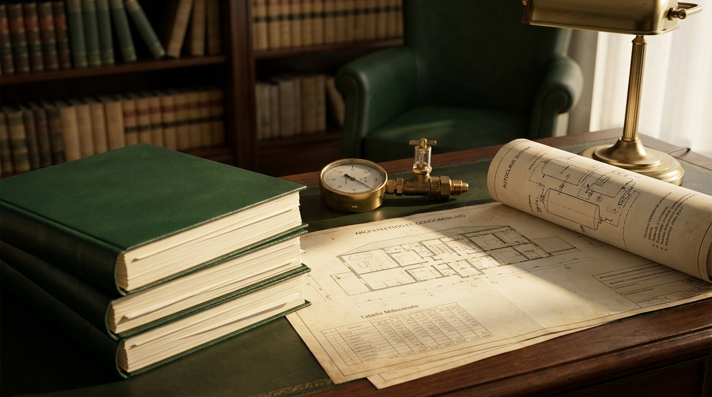

Spese autoclave in condominio: la ripartizione segue i millesimi
L'autoclave che porta l'acqua ai piani alti serve tutti, ma chi paga di più? La risposta non sta nell'altezza dell'appartamento bensì nei millesimi di proprietà. Cassazione e diversi Tribunali hanno chiarito il criterio, mettendo fine a una contestazione ricorrente tra condomini e amministratori. Vediamo perché conta e come comportarsi.

Il fatto e perché conta
L'autoclave è l'impianto che, tramite una pompa, aumenta la pressione dell'acqua per garantirne l'arrivo anche ai piani più elevati, dove la rete idrica pubblica non basta. Da qui un'obiezione frequente: se l'impianto serve soprattutto chi abita in alto, perché dovrebbero contribuire anche i proprietari del piano terra?
La questione non è teorica. Genera contenzioso nelle assemblee, blocca approvazioni di bilancio e finisce davanti al giudice. La giurisprudenza ha però individuato una regola chiara, che conviene conoscere prima di impugnare un riparto o rifiutare un pagamento.
Inquadramento normativo
Il punto di partenza è l'articolo 1117 del Codice civile, che elenca i beni e gli impianti di proprietà comune. Tra questi rientrano gli impianti idrici fino al punto di diramazione verso le singole unità: l'autoclave, in quanto serve l'erogazione idrica dell'edificio, è quindi bene comune a tutti i condomini.
La conseguenza si trova nell'articolo 1123, primo comma: le spese per la conservazione e il godimento delle parti comuni sono sostenute dai condomini in misura proporzionale al valore della proprietà di ciascuno, cioè in base ai millesimi. Il secondo comma prevede un criterio diverso — la ripartizione per uso differenziato — ma solo quando una cosa è destinata a servire i condomini in misura diversa.
Proprio su questo si è espressa la Corte di Cassazione, seguita da Tribunali di merito come quelli di Termini Imerese e Livorno: l'autoclave non rientra nell'eccezione del secondo comma. L'impianto serve indistintamente l'intero edificio, perché garantisce pressione e continuità all'erogazione per tutti, a prescindere dal piano. Non esiste quindi un "uso differenziato" misurabile che giustifichi una ripartizione diversa dai millesimi.
Implicazioni pratiche
Per il condomino significa che non può pretendere uno sconto sulle spese dell'autoclave solo perché abita ai piani bassi. Il riparto per millesimi è la regola, e una delibera che lo applica è legittima.
Per l'amministratore significa che impostare il riparto sui millesimi è la scelta corretta e difendibile. Adottare criteri alternativi — ad esempio addossare la spesa solo ai piani alti — espone la delibera a impugnazione e responsabilità.
Resta un margine di autonomia: l'assemblea può approvare all'unanimità un criterio diverso, oppure il regolamento condominiale di natura contrattuale può prevedere una ripartizione differente. Senza il consenso di tutti, però, non è possibile derogare al criterio legale dei millesimi a maggioranza.
Attenzione anche alla distinzione tra spese ordinarie e straordinarie. Le bollette dell'energia per il funzionamento della pompa, la manutenzione e l'eventuale sostituzione dell'autoclave seguono tutte il criterio millesimale, salvo diverse pattuizioni valide.
Cosa fare in concreto
- Verificate il titolo prima di contestare. Controllate se il regolamento di condominio, in particolare se di origine contrattuale, prevede un criterio di riparto specifico per gli impianti idrici.
- Leggete il verbale di delibera. Accertatevi che la spesa sia stata ripartita per millesimi e che la voce sia correttamente identificata nel bilancio.
- Non rifiutate il pagamento di propria iniziativa. Sospendere i versamenti espone a decreto ingiuntivo. Se ritenete il riparto errato, la via è l'impugnazione della delibera nei termini, non l'inadempimento.
- Rispettate i termini di impugnazione. Le delibere annullabili vanno contestate entro trenta giorni dall'assemblea, o dalla comunicazione del verbale per gli assenti.
- Per l'amministratore: documentate il criterio. Indicate in modo trasparente nel rendiconto la base del riparto, così da prevenire contestazioni.
La materia condominiale è ricca di eccezioni legate ai singoli regolamenti. Consigliamo di far esaminare l'atto costitutivo e le tabelle millesimali prima di assumere posizioni in assemblea o avviare un contenzioso, perché un dettaglio nel titolo può cambiare l'esito.
Conclusione
Il principio è consolidato: l'autoclave serve l'intero edificio e le sue spese si dividono per millesimi. Deroghe possibili solo con il consenso di tutti o con previsione regolamentare contrattuale. Chi ritiene scorretto il riparto deve agire entro i termini, senza interrompere i pagamenti.
Contributo informativo a cura di Tamburro & Partners - Avv. Giuseppe Tamburro. Non costituisce parere legale.
Ogni condominio ha una storia a sé.
Se gestisci un'amministrazione e vuoi un confronto su una specifica questione condominiale, scrivi allo studio. Ti rispondiamo entro un giorno lavorativo.